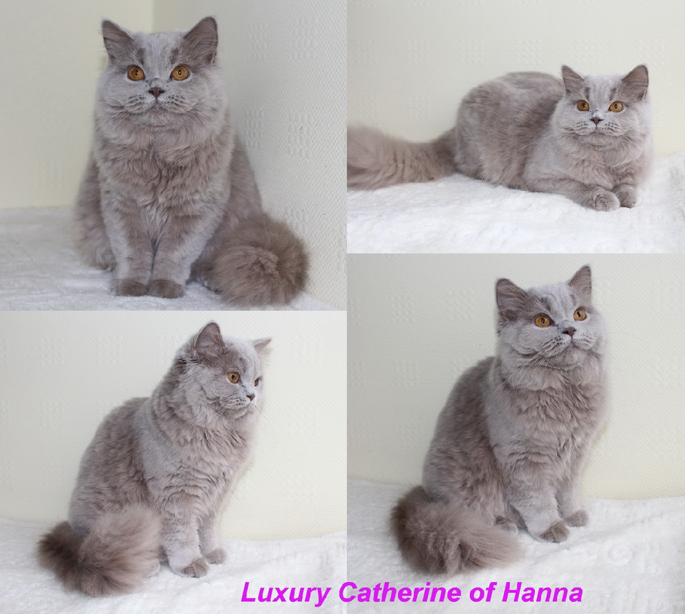
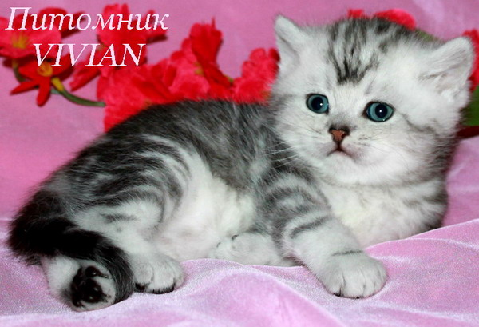
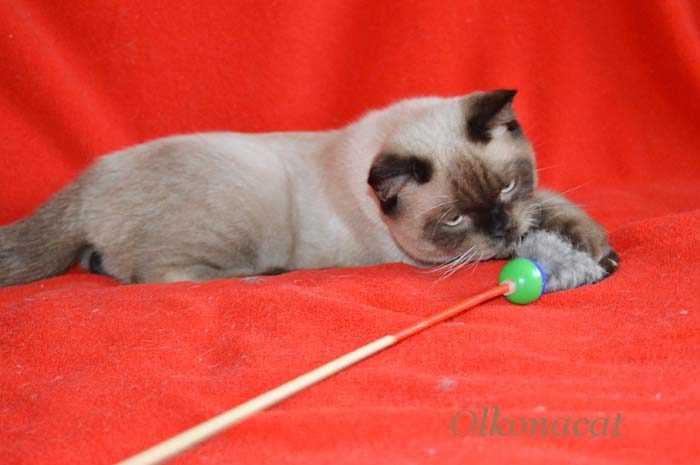

Это милое, прекрасное создание с хорошим характером, которое быстро
адаптируется к новому окружению и людям. Коты этой породы очень верные,
и при проживании в семье они выстраивают тесные отношения только
с одним человеком.

Этому животному свойственно чисто кошачье любопытство
(«а что притаилось во-о-он на том шкафчике?»)

Он очень игрив и быстро привязывается к человеку.
В отличие от кошек многих других пород, сфинкс следует за своими хозяевами неотступно,
и при первой же возможности норовит запрыгнуть на колени.

Это плюшевое создание больше похоже на собак – своей необычайной
привязанностью к хозяину и безграничной преданностью.

Она всегда реагирует на жестикуляцию, тон и речь человека.
Ей чужды проявления мстительности и вредительства.

Нежность любви ее иногда сопровождается повышенными
требованиями к вниманию и некоторыми проявлениями ревности. Слегка агрессивно и
настороженно относится к незнакомцам, а также не прощает незаслуженные обиды.

Антиаллергенная милая кошечка, всех любит и всех боится, однако
никогда не даст себя в обиду.

Миролюбие и покладистость характера в сочетании с большими
размерами является неоспоримо привлекательным качеством Куняши. Постоянно ходит за людьми,
заглядывает в глаза, и как будто пытается что-то сказать, без конца мурлыча и мурлыча.

Прекрасная компаньонка, умная, любознательная и преданная.
Тигрёна активна и постоянно находится в поисках приключений, развлекая не
только себя, но и других домашних питомцев.

Слегка флегматична. Вместе с тем, очень привязана к хозяевам,
не терпит одиночества, а интеллектуальных способностей достаточно, чтобы приучиться
к туалету, понимать речь и интонацию и даже выполнять некоторые команды.